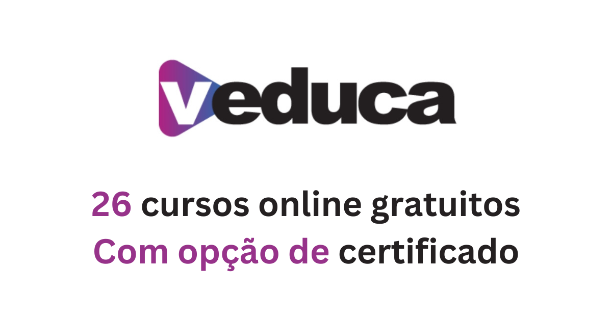
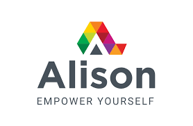

ODS 4 – Educação de Qualidade

Assegurar a educação inclusiva, equitativa e de qualidade, e promover oportunidades de aprendizagem ao longo da vida para todas e todos em Cornélio Procópio.
Sobre o Projeto
Projeto desenvolvido para a disciplina de Programação Web Front-End da Universidade Tecnológica Federal do Paraná (UTFPR). É uma aplicação web voltada para a área da educação. A proposta é criar um espaço digital para facilitar o acesso de estudantes a conteúdos de apoio, materiais complementares, dicas de estudo e informações sobre oportunidades educacionais.
A ideia do projeto é contribuir para a democratização do acesso à informação e incentivar o desenvolvimento educacional da comunidade.
Por que isso importa?
- Cerca de 244 milhões de crianças e jovens estão fora da escola em todo o mundo.
- Mais de 771 milhões de adultos não sabem ler nem escrever.
- Apenas 4 em cada 10 países garantem ao menos 12 anos de educação gratuita.
- A educação é um direito humano fundamental reconhecido pela Declaração Universal dos Direitos Humanos.
Plataformas de Ensino Gratuito
Atualmente existem diversas plataformas educacionais que oferecem cursos, livros, videoaulas e materiais gratuitos para estudantes do mundo inteiro. Essas iniciativas contribuem diretamente para o ODS 4 – Educação de Qualidade, ampliando o acesso ao conhecimento e incentivando a aprendizagem contínua.
edX

O edX é uma plataforma de ensino online criada pelo MIT e pela Harvard University. O site disponibiliza cursos gratuitos e profissionais em áreas como programação, engenharia, matemática, ciência de dados, inteligência artificial e negócios.
A plataforma reúne conteúdos de universidades renomadas do mundo inteiro, permitindo que estudantes tenham acesso a materiais de alta qualidade pela internet.
Observação: grande parte dos cursos está disponível em inglês.
Acesse: edX
Khan Academy

A Khan Academy é uma plataforma educacional gratuita voltada para ensino de matemática, física, química, biologia, programação e diversas outras áreas. Seu objetivo é oferecer educação acessível e de qualidade para qualquer pessoa.
O site possui exercícios interativos, videoaulas e acompanhamento de progresso, sendo muito utilizado por estudantes do ensino fundamental, médio e superior.
Diferente de muitas plataformas internacionais, a Khan Academy possui grande parte do conteúdo traduzido para o português.
Acesse: Khan Academy
MIT OpenCourseWare

O MIT OpenCourseWare é um projeto do Massachusetts Institute of Technology (MIT) que disponibiliza gratuitamente materiais completos de disciplinas universitárias reais.
A plataforma oferece apostilas, exercícios, provas, videoaulas e conteúdos avançados em áreas como engenharia, computação, física e matemática.
Observação: a maior parte do conteúdo está em inglês.
Acesse: MIT OpenCourseWare
Veduca

O Veduca é uma plataforma brasileira de educação online que oferece cursos gratuitos e conteúdos acadêmicos em português.
O site disponibiliza materiais voltados para desenvolvimento profissional, gestão, tecnologia e preparação acadêmica, aproximando o ensino superior da população brasileira.
Acesse: Veduca
Escola Virtual Fundação Bradesco

A Escola Virtual da Fundação Bradesco oferece cursos gratuitos em áreas como informática, programação, administração, desenvolvimento pessoal e tecnologia.
A plataforma é bastante utilizada no Brasil por estudantes que desejam adquirir conhecimentos básicos e profissionalizantes de forma gratuita.
Muitos cursos oferecem certificado de conclusão.
Acesse: Escola Virtual Fundação Bradesco
FGV Online

A Fundação Getulio Vargas (FGV) disponibiliza cursos online gratuitos em áreas como administração, economia, direito, marketing e tecnologia.
A plataforma busca ampliar o acesso à educação de qualidade e incentivar a capacitação profissional por meio do ensino a distância.
Alguns cursos oferecem certificado gratuito de participação.
Acesse: FGV Online
Alison

Alison é uma plataforma internacional de ensino online que oferece milhares de cursos gratuitos em áreas como tecnologia, negócios, saúde, idiomas e desenvolvimento pessoal.
O site possui foco em capacitação profissional e aprendizagem contínua, permitindo que estudantes desenvolvam novas habilidades pela internet.
Observação: a maior parte dos cursos está em inglês.
Acesse: Alison
Open Culture

O Open Culture é uma plataforma educacional gratuita que reúne milhares de recursos voltados para aprendizado e desenvolvimento pessoal. O site oferece acesso a cursos online, livros digitais, filmes, documentários, audiobooks, podcasts e materiais de universidades renomadas ao redor do mundo.
A proposta da plataforma está diretamente relacionada ao ODS 4 – Educação de Qualidade, pois busca democratizar o acesso ao conhecimento e tornar a educação mais acessível para todas as pessoas, independentemente de condição financeira ou localização.
Entre os conteúdos disponíveis estão cursos de instituições como Harvard, Stanford e MIT, além de materiais nas áreas de tecnologia, ciência, literatura, filosofia, idiomas e artes.
Observação: a maior parte dos cursos está em inglês.
Acesse o site oficial: Open Culture
Faça Parte
Junte-se à nossa comunidade e contribua com debates, pesquisas e iniciativas voltadas para o ODS 4. Crie sua conta ou acesse caso já seja cadastrado.